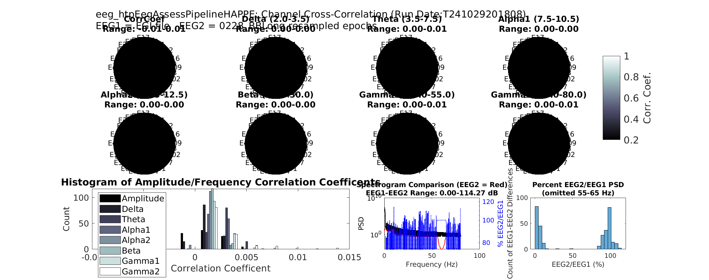

eeg_htpEegAssessPipelineHAPPE Function
Overview
The eeg_htpEegAssessPipelineHAPPE function is an adaptation of the HAPPE (Harvard Automated processing Pipline for EEG) framework. However, it should be stated that this is no tanother preprocessing function, but this function is specifically designed to perform a comparative quality analysis between the intial version of an EEG file and the post process version. (EEG1 and EEG2). It includes visual quality checks, as well as computation of various quality metrics and statistical outputs. The function returns a summary table of metrics and exports visuals and statistics if specified.
Please Note it is necessary to have EEGLAB running prior to utilizing the eeg_htpEegAssessPipelineHAPPE function.
Key Features
- Compares EEG datasets
EEG1andEEG2using correlation coefficients across channels and frequency bands. - Includes signal quality checks, visualizations, and detailed output logs.
- Provides options to adjust resampling rates, define group labels, and export data in different formats.
Requirements
- The function is designed to use an unprocessed and postprocessed version of the same EEG, not two different EEG samples
- They should also both have the same sampling rate for both files
Function Syntax
[summary_table] = eeg_htpEegAssessPipelineHAPPE(EEG1, EEG2, varargin)
Input Parameters/Requirements
EEG1: The first EEG dataset in EEG.setfile format and is the initial version of the EEG.EEG2: The second EEG dataset in EEG.setfile format and is the post process version of the EEG.varargin: Optional parameters passed as name-value pairs.
Optional Parameters (varargin)
outputdir(default:tempdir): The directory where outputs are saved.resampleRate(default: 500): Resampling rate for the datasets.groupLabels(default: {EEG1.setname,EEG2.setname}): Labels for each group, used in output logs and plots.tableonly(default:false): Iftrue, only summary tables are generated without visualization.saveoutput(default:true): Iftrue, saves the output files (CSV and image files).outputfile(default:[]): Specifies a custom filename for the CSV output file.
Steps and Details
1. Input Validation and Resampling
- The function validates the data type for inputs and confirms that the sampling rates of
EEG1andEEG2are the same. - If resampling is needed (defined by
resampleRate), it uses the functioneeg_htpEegResampleDataEeglabto resample both EEG datasets to the specified rate.
2. Signal Preparation
- Converts epoch data into continuous format if
EEG1orEEG2are epoched. - Converts EEG data to
doubleprecision to ensure accuracy during calculations.
3. Quality Assurance Metrics
The function obtains several quality assurance metrics:
- Channel Correlation Coefficient:
- Description: This measures the linear relationship between the corresponding channels of
EEG1andEEG2. - Calculation: The correlation coefficient is calculated for each channel across the two datasets using the
corrfunction. - Output: A vector of correlation coefficients, one for each channel. High values close to 1 indicate high similarity between the channels.
- Description: This measures the linear relationship between the corresponding channels of
- Frequency Band Correlation:
- Description: This assesses the similarity of EEG signals in specific frequency bands across channels.
- Calculation: The magnitude-squared coherence (
mscohere) function is used to compute the coherence between signals for each frequency band. - Output: A matrix where each row corresponds to a channel and each column to a frequency bin. Higher coherence values indicate stronger similarity in the frequency domain.
- Signal-to-Noise Ratios (SNR):
- Description: This measures the ratio of signal power to noise power in the EEG data.
- Calculation: The SNR is calculated using a forumla that divides the square root of two variable
NUMandDEN. Then converts its units into decibels using a lograithmic funcition.NUMis the sum of squares of the EEG signal, andDENis the sum of squared differences between EEG1 and EEG2. - Output: A single SNR value indicating the overall signal quality relative to noise.
Outputs
Primary Outputs
The function generates and exports:
- summary_table: A table containing quality metrics, correlations, and information about channels with lower quality signals.
-
qi_table(optional): A quality index table for tracking assessment details across multiple EEG datasets. -
CSV File: If
saveoutputistrue, the function saves thesummary_tablein CSV format. A custom filename can be specified withoutputfile. -
Image File: Saves visualizations as a PNG image if
tableonlyisfalse.
Optional Visualization
(Note - Only will occur if tableonly is false)
- Topographic Plots: These plots show the correlation coefficients for different EEG channels. The units are dimensionless because correlation coefficients range from -1 to 1.
- Histogram: The x-axis represents the correlation coefficient values (dimensionless), and the y-axis represents the count or frequency of these values.
-
Spectrogram and Difference Line Plot: Compares the power spectral density (PSD) of
EEG1andEEG2with a line plot highlighting percentage differences. The y-axis (left side) represents the Power Spectral Density (PSD) in logarithmic units, typically dB/Hz (decibels per Hertz). The y-axis (right side) represents the percentage difference in power between EEG2 and EEG1, expressed in percentage (%). -
Difference Histogram: Plots The x-axis represents the percentage difference between EEG2 and EEG1 power (%), and the y-axis represents the count or frequency of these percentage differences.


Example Usage
% Load EEG datasets
EEG1 = pop_loadset('filename', 'EEG1.set', 'filepath', 'path/to/data');
EEG2 = pop_loadset('filename', 'EEG2.set', 'filepath', 'path/to/data');
% Run quality assessment with custom parameters
summary_table = eeg_htpEegAssessPipelineHAPPE(EEG1, EEG2, ...
'outputdir', 'example_directory', ...
'resampleRate', 250, ...
'groupLabels', {'Control', 'Experimental'}, ...
'tableonly', false, ...
'saveoutput', true, ...
'outputfile', 'EEG_quality_comparison.csv');
Final Notes
Ensure EEG datasets EEG1 and EEG2 have similar structure (ie. same sampling rate and sample size) and channels before running.
Use resampleRate to control the down-sampling for faster processing if EEG data has a high sampling rate.
This function requires access to EEGLAB functions such as pop_loadset and eeg_htpEegResampleDataEeglab, so make sure they are in your working directory.